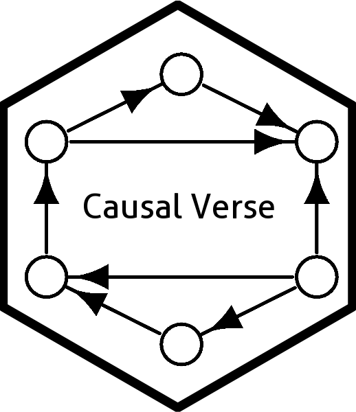

Is a Third Variable a Moderator, a Mediator, Both, or Neither?
role_test.RdA gated decision procedure for a randomized binary treatment \(X\), an outcome \(Y\), and a candidate third variable \(Z\). It operationalizes the MacArthur criteria of Kraemer et al. (2002, 2008): a moderator precedes treatment and is unaffected by it; a mediator is affected by treatment and in turn related to the outcome.
Usage
role_test(
data,
treat,
outcome,
z_post,
z_pre = NULL,
margin = 0.2,
alpha = 0.05,
B = 1999,
seed = NULL
)Arguments
- data
A data frame.
- treat, outcome, z_post
Character names of the binary treatment, the outcome, and the post-treatment measure of the third variable.
- z_pre
Optional character name of the baseline measure.
- margin
Equivalence margin in SD units for
equivalence_shift. Default0.2.- alpha
Significance level for every step. Default
0.05.- B
Permutations for
shift_test. Default1999.- seed
Optional seed.
Value
An object of class "role_test": a list with verdict,
design ("pre-post" or "post-only"), a data frame
steps summarizing each test, and the component objects
shift and equivalence.
Details
With a baseline measure (z_pre supplied):
shift_testonz_postresidualized onz_pre: did treatment move \(Z\)?Moderation is tested on the baseline measure, \(X \times Z_{pre}\), which is a valid effect-modification test regardless of step 1.
If step 1 rejects, the \(Z \to Y\) path is tested by regressing \(Y\) on \(X\), \(Z_{post}\), and \(Z_{pre}\).
If step 1 does not reject,
equivalence_shiftdecides between "neither" and "undetermined" when there is no moderation.
Verdicts: "both", "mediator", "moderator",
"neither", "post-treatment, no Z-Y path", "undetermined".
Post-only design (z_pre = NULL): if step 1 rejects,
\(Z\) cannot be a moderator and the verdict is "mediator" or
"post-treatment, no Z-Y path". If it does not reject, the
equivalence test must pass before the \(X \times Z_{post}\) interaction
is interpreted as moderation; otherwise the verdict is
"undetermined". Moderation by a variable the treatment has moved
cannot be detected in this design, so "both" is never returned.
What is and is not identified: the effect of \(X\) on \(Z\) and
moderation by baseline \(Z\) are identified by randomization. The
\(Z \to Y\) path is not; a "mediator" verdict therefore means
"mediator candidate" and rests on sequential ignorability. Pair it with a
sensitivity analysis (for example mediation_analysis) or a
design that manipulates \(Z\).
References
Kraemer, H. C., Wilson, G. T., Fairburn, C. G., & Agras, W. S. (2002). Mediators and moderators of treatment effects in randomized clinical trials. Archives of General Psychiatry, 59(10), 877-883.
Kraemer, H. C., Kiernan, M., Essex, M., & Kupfer, D. J. (2008). How and why criteria defining moderators and mediators differ between the Baron & Kenny and MacArthur approaches. Health Psychology, 27(2, Suppl.), S101-S108.
Examples
d <- simulate_role_data("both", n = 1000, seed = 3)
role_test(d, treat = "X", outcome = "Y", z_post = "Z_post", z_pre = "Z_pre",
B = 499, seed = 4)
#>
#> Third-variable role test (pre-post design, n = 1000)
#>
#> step estimate p.value result
#> Treatment moved Z (randomization test) 0.004 yes
#> Z unaffected within +/- 0.20 SD (TOST) 0.460 1.000 not established
#> Moderation: X x Z_pre interaction 0.422 0.000 significant
#> Z -> Y path: Z_post | X, Z_pre 0.486 0.000 significant
#>
#> Verdict: both
#> Note: the Z -> Y path is not randomized; 'mediator' means mediator candidate
#> under sequential ignorability. Add a sensitivity analysis.
#>